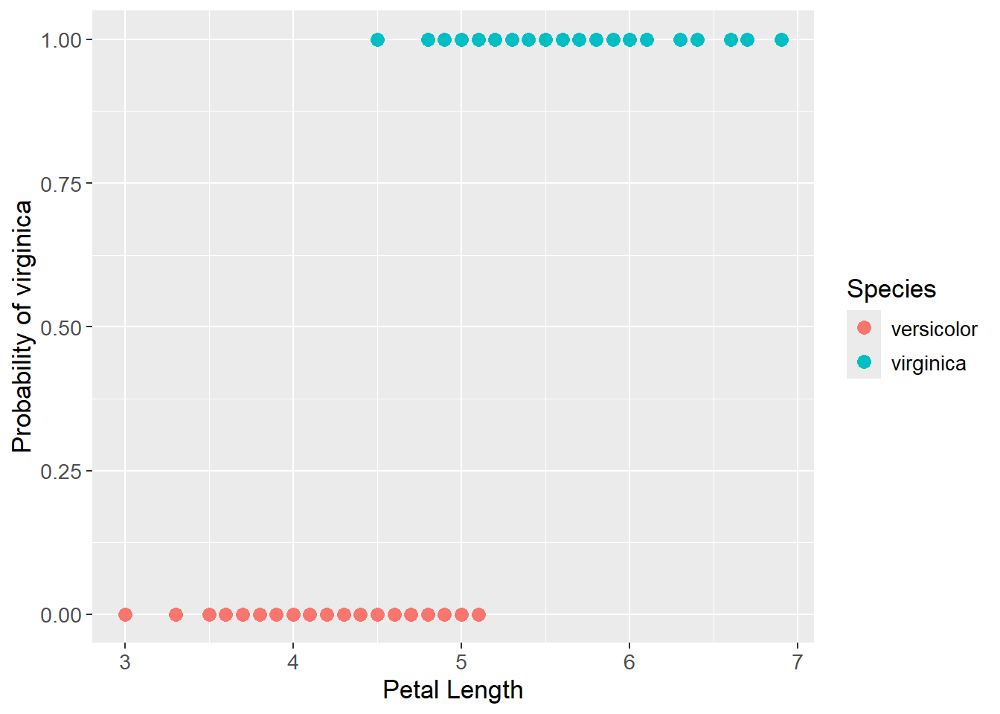
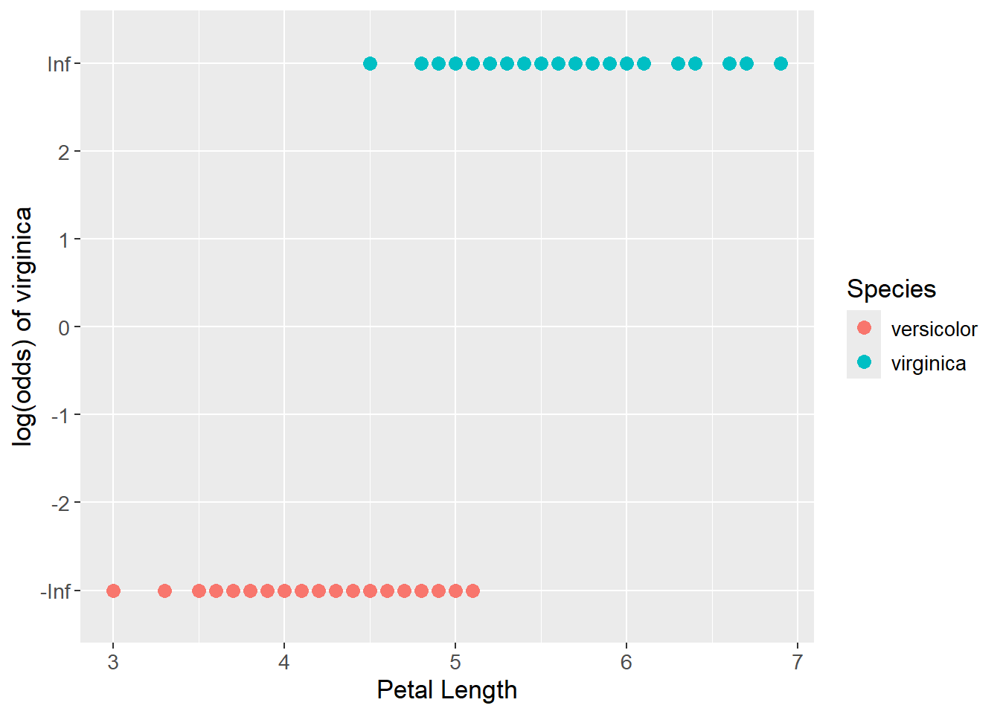
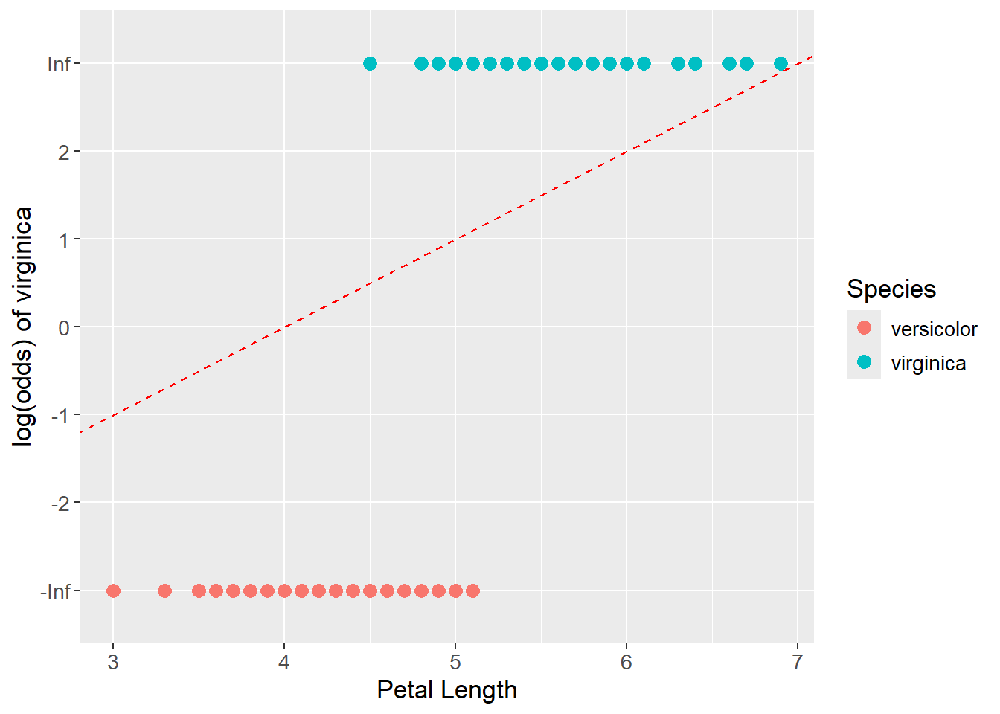

Show the code
set.seed(1337)
library("tidymodels")
tidymodels::tidymodels_prefer()
library("MASS")Set seed and load packages.
set.seed(1337)
library("tidymodels")
tidymodels::tidymodels_prefer()
library("MASS")Load data.
data("iris")
iris <- iris |>
tibble::as_tibble() |>
filter(Species != "setosa") |>
droplevels()Opposite Ordinary Least Squares (OLS), which predicts a continuous value, logistic regression predicts a probability between two classes (usually referred to as a TRUE/FALSE). This is done by fitting a logistic function, also called a sigmoid function, which has the form \(p = \frac{1}{1 + e^{-y}}\) and have a characteristic S-shape. When plotting these probabilites, the y-axis ranges from 0 to 1 reflecting the probability of the class measured along the y-axis.
When applying logistic regression, the probabilites are transformed into a continuous scale with the logit function which has the form \(log(odds) = log(\frac{p}{1-p})\). The logit function converts the probabilities into log-odds. For example, a probability of 0.5 is 0 log-odds, the center on both y-axes. A probability of 0.731 is 1 log-odds and so forth. The points that were classified as TRUE, i.e. 1 on the y-axis, is transformed to positive infinity on the new y-axis as:
\[ log(odds) = log(\frac{p}{1-p}) = log(\frac{1}{1-1}) = log(\frac{1}{0}) = log(1) - log(0) = \infty \]
The points that were classified as FALSE, i.e. 0 on the previous y-axis, is transformed to negative infinity on the new y-axis as:
\[ log(odds) = log(\frac{p}{1-p}) = log(\frac{0}{1-0}) = log(\frac{0}{1}) = log(0) - log(1) = -\infty \]
So, the interval of 0.5 to 1 on the old axis as been transformed into an interval from 0 to positive infinity and vice versa. The data now exists on a continuous scale from negative to positive infinity, and a straight line can be fitted to the data.
For finding the coefficients for the fitted line, logistic regression cannot apply sum of squared residuals as OLS did, as the distance between a point and a candidate line tends to be infinity given the transformation mentioned above. Instead, maximum likelihood is used to find the best fit line. The term refers to maximizing the likelihood of observing the data given the model. The likelihood is the product of the probabilities of the data points, so a good fit also maximizes the product of the probabilities.
After finding a candidate line on the log-odds scale (the continuous scale), the data points are projected onto the line. The log-odds values are read off the y-axis and converted back into probabilities with the logistic function. The product of probabilities, the likelihood, is calculated where the product is found differently for the TRUE and FALSE classes:
\[ L(\beta,x_i,y_i) = \prod_{i \; in \; y = 1}^{n} x_i \cdot \prod_{i \; in \; y = 0}^{n} (1-x_i) \]
Where ‘n’ is the number of observations, ‘y’ is the class, and ‘x’ is individual probabilities. It is the above product that is maximized by trying different lines on the log-odds scale. The line that maximizes the product is the best fit line which can be written as:
\[ \beta_{LR} = \max_{\beta} \; L(\beta,x_i,y_i) \]
The process results in the best set of coefficients for the linear line that maximizes the product of probabilities, i.e. maximum likelihood. It is possible to convert the linearly fit line back to the original scale with the logistic function by replacing ‘y’ with the linear equation:
\[ p = \frac{1}{1 + e^{-y}} = \frac{1}{1 + e^{-(\beta_0 + \beta_1 \cdot x_1+ \beta_2 \cdot x_2 + ... + \beta_n \cdot x_n)}} \]
For illustrating logistic regression, we will use the iris dataset and predict the probability of a flower being a virginica based on the petal length. As previously, the setosa class have been removed from the data set to only contain two classes. The species is transformed into a binary variable, where versicolor is 0 and virginica is 1. Below the data is visualized where the petal length is seen on the x-axis and the probability of being a virginica is seen on the y-axis.
iris_prob <- iris |>
mutate(Species_prob = case_when(Species == "versicolor" ~ 0,
Species == "virginica" ~ 1))
iris_prob_plot <- iris_prob |>
ggplot(aes(x = Petal.Length,
y = Species_prob)) +
geom_point() +
labs(x = "Petal Length",
y = "Probability of virginica")
iris_prob_plot
The probabilities are then transformed to log(odds) with the logit function. In this data set, all values were either 1 or 0, which is why the log(odds) values are either positive or negative infinity as seen below:
iris_logit_plot <- iris_prob |>
mutate(Species_logit = log(Species_prob / (1 - Species_prob))) |>
mutate(Species_logit = case_when(Species_logit == Inf ~ "Inf",
Species_logit == -Inf ~ "-Inf",
TRUE ~ as.character(Species_logit)
)) |>
ggplot(aes(x = Petal.Length,
y = Species_logit)) +
geom_point() +
scale_y_discrete(limits = c("-Inf", "-2", "-1", "0", "1", "2", "Inf")) +
labs(x = "Petal Length",
y = "log(odds) of virginica")
iris_logit_plot
As a candidate fit, see the red dashed lined below. The data points are projected onto the line and the log(odds) values are read off the y-axis. The log(odds) values are then converted back into probabilities with the logistic function and the product for the TRUE and FALSE classes are found. The product of the two classes is then calculated. The candidate line that maximizes the product is the best fit line.
iris_logit_plot +
geom_abline(intercept = 0, slope = 1, linetype = "dashed", color = "red")
Ultimately, the optimal sigmoid shaped line is found:
iris_prob_plot +
geom_smooth(method = "glm",
method.args = list(family = "binomial"),
se = FALSE)`geom_smooth()` using formula = 'y ~ x'